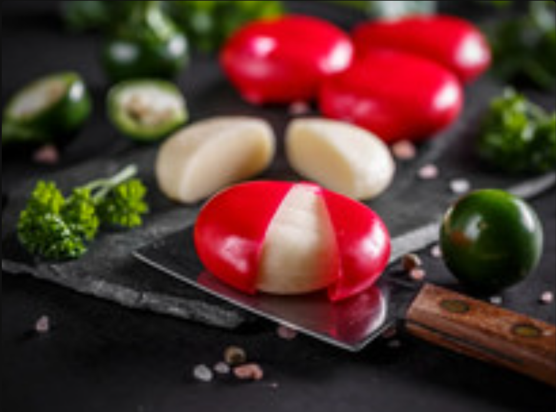
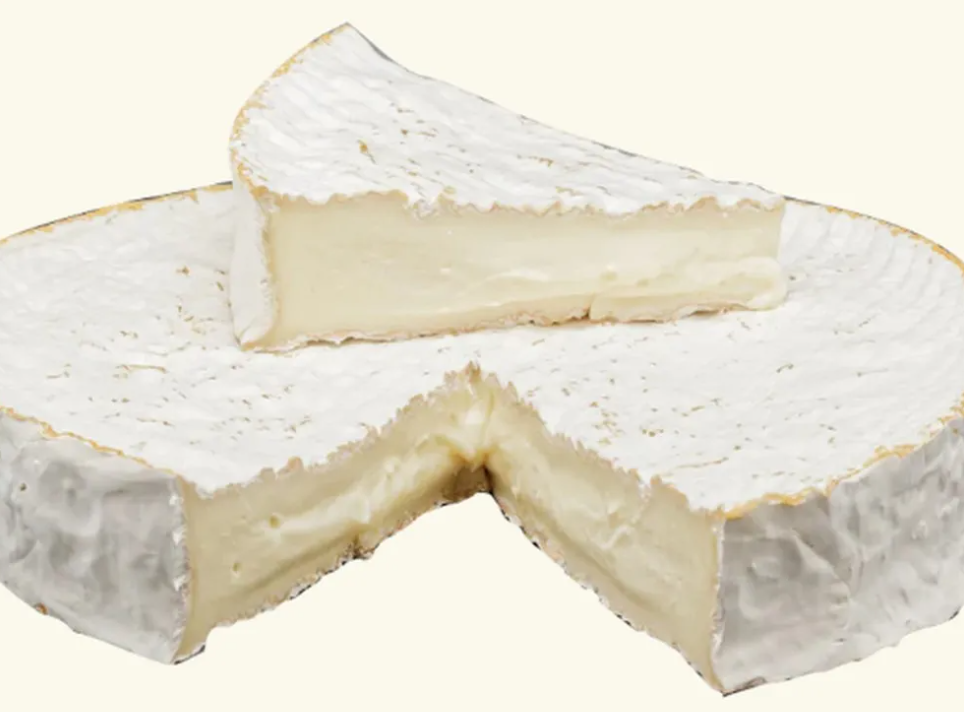
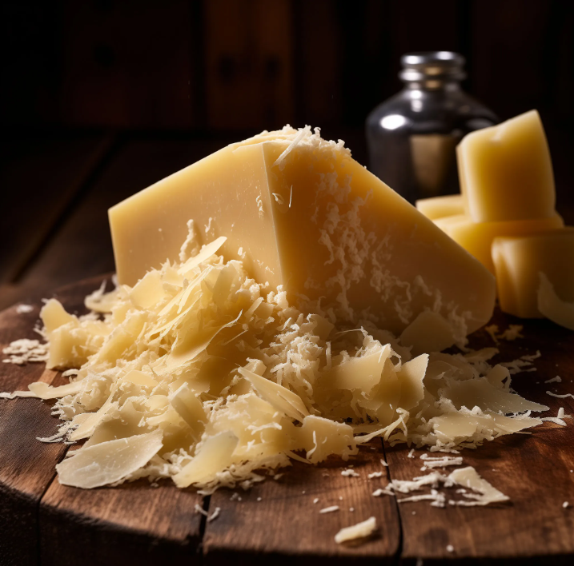
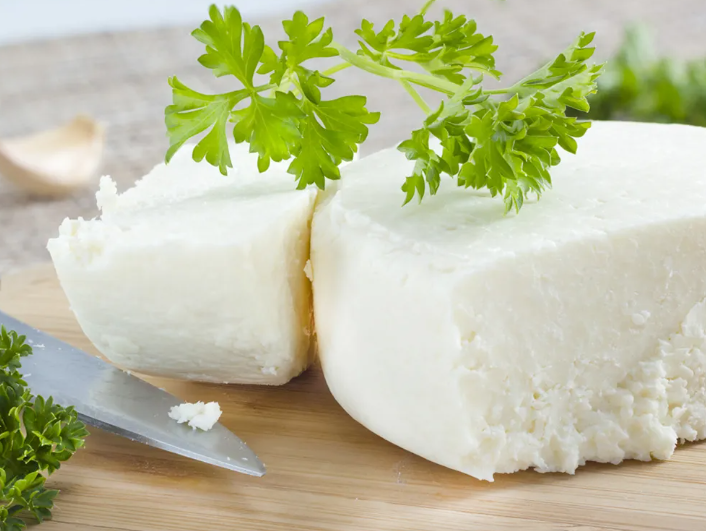
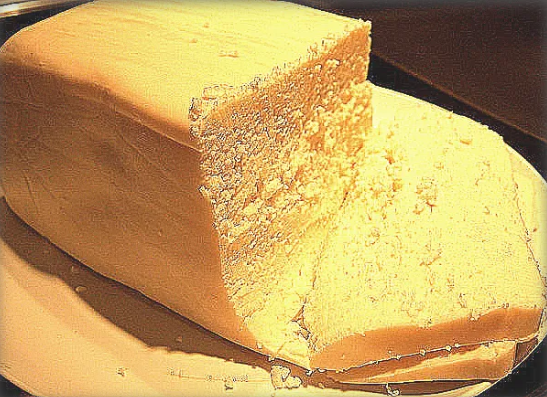
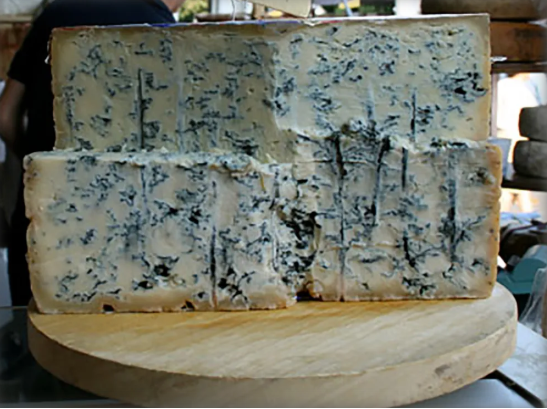
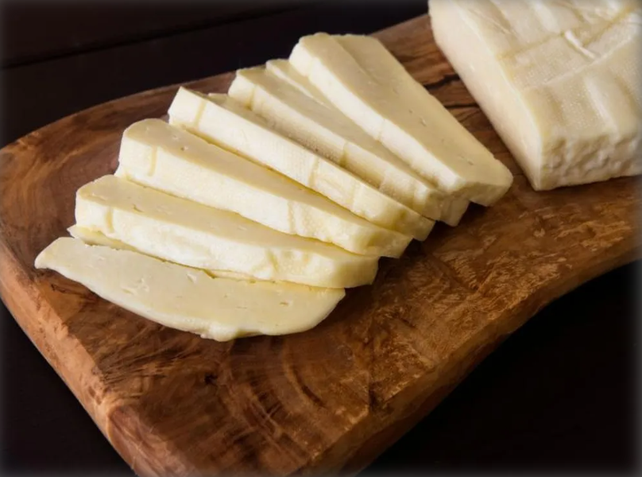
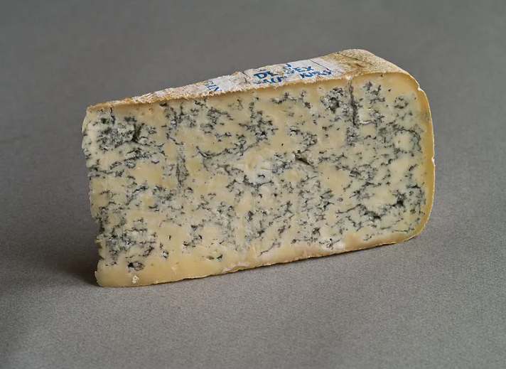
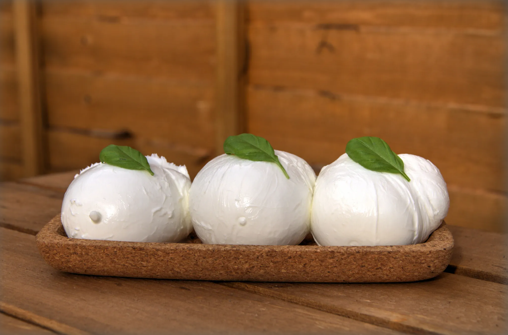
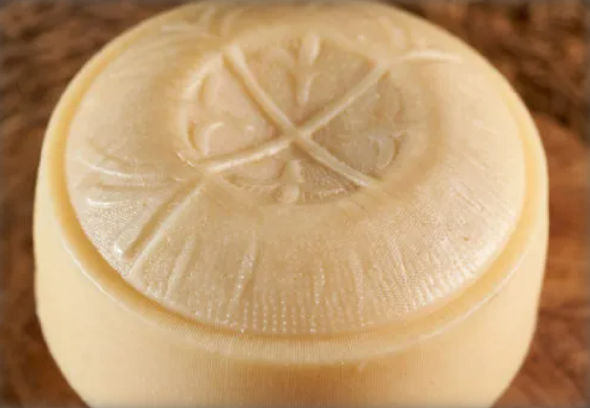

Welcome to the Cheese Connoisseur Club
Join us for an exciting journey into the world of cheese!
Meet likeminded cheese lovers, explore new palettes,and share your passion for all things cheese!
Current Cheese Rankings
Check out the latest rankings of our favorite cheeses!
| Rank of Cheese | Cheese Name | Type of Cheese | Image of Cheese |
|---|---|---|---|
| 1 | Babybel | Semi-hard Cheese |  |
| 2 | Brie | Soft Cheese |  |
| 3 | Parmesan | Hard Cheese |  |
| 4 | Cotija | Hard Cheese |  |
| 5 | Queso Fresco Adobera | Fresh Soft Cheese |  |
| 6 | Gorgonzola | Soft Cheese |  |
| 7 | Garnie | Fresh Firm Cheese |  |
| 8 | Blue Cheese | Semi Soft Cheese |  |
| 9 | Mozzarella di Bufala DOP | Soft Cheese |  |
| 10 | Tronchon | Semi-firm Cheese |  |